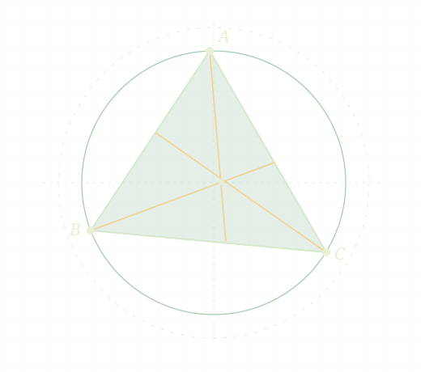

Электронная библиотека
Олимпиадная
математика
Теория, задачи и официальные разборы. Выберите класс, откройте нужный том или найдите задачу по условию.

57томов
9 699страниц
8 089записей задач
20учебных томов
Библиотека без интернета
Сохрани указатель сейчас, а нужные PDF — на странице чтения.
Учебный маршрут
Числа и делимость
Шесть задач на трёх уровнях. Подсказки и разборы на русском и английском.
Учебная серия
Начните с класса
По пять томов на класс: теория, схемы, упражнения и разборы.
Полное собрание
Все тома
Загружаем оглавление…